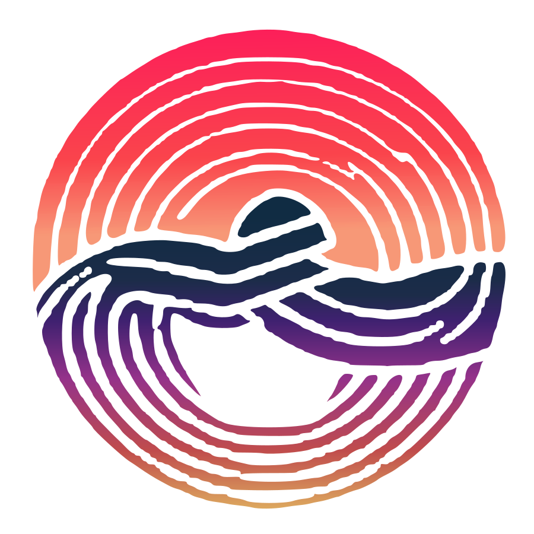
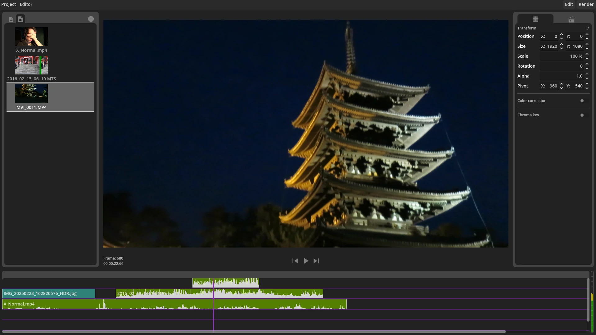

GoZen is an open-source video editor built with Godot. Designed for Linux users first, GoZen combines simplicity for beginners with powerful features for content creators.
Try GoZen Alpha
We prioritize bug fixes above all else, ensuring you have a stable editing experience every time you use GoZen without having the stress of losing your progress, this way you can stay zen whilst editing in GoZen.
GoZen is designed with Linux users in mind. Finally, a video editor that feels native to your Linux workflow. Windows is also supported but is not the top priority.
Built with the Godot Engine, because of this creating and adding modules is as simple as it can be! No complex language which you need to learn to extend your workflow.
Extend your workflow with modules. GoZen's architecture makes it easy to add new features and customize your editing experience with modules to fit your personal editing needs.
A smooth, non-cluttered user interface makes video editing intuitive for beginners while remaining powerful for content creators. Never feel overwhelmed again when editing videos.
As an open-source project, GoZen thrives on community contributions and feedback to create the editor normal users and content creators actually want to use.

For financially supporting GoZen there is the Open Collective, all donations will exclusively be used for the development of the video editor.
Open Collective pageBuilt with the Godot Engine, because of this creating and adding modules is as simple as it can be! No complex language which you need to learn to extend your workflow.
Ko-fi pageHelping with testing, fixing bugs, creating features, ... Developing a video editor is a lot of work so all help is welcome.
GitHub pageGoZen is currently in alpha. We're working hard to add features and fix bugs before our stable release.
Join our community to help shape the future of GoZen!
View on GitHubDownload the alpha version and start editing your videos with GoZen today. Your feedback helps us improve!
Download Alpha